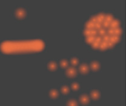

Material Panel¶
Materials can be linked to objects and Object’s data in the . Here is where you can manage how materials are linked to objects, meshes, etc. and activate a material for editing in the rest of the panels.

Material panel.
Material slots¶
- Active Material
The objects material slots displayed in a List View.
- Specials
- Copy and paste the selected material slot.
Multiple materials¶
Meshes can handle having more than one material. Materials can be mapped on a per-face basis, as detailed on the Multiple Materials page. In edit mode, the following tools appear:
- Assign
- Assign the material in the selected material slot to selected vertices.
- Select
- Select vertices assigned to the selected material slot.
- Deselect
- Deselect vertices assigned to the selected material slot.
Material naming and linking¶
- Material
- The Material Data-Block Menu for the selected material slot.
- Nodes
- Toogle
 that designates this material to be a material node setup,
and not from the Material/Ramps/Shaders settings.
that designates this material to be a material node setup,
and not from the Material/Ramps/Shaders settings. - Data-block Links
Specifies whether the material is to be linked to the Object or to the Object Data.
The Link selector has two choices, Data and Object. These two menu choices determine whether the material is linked to the object or to the data, (i.e. a mesh or curve). The Data menu item determines that this material will be linked to the mesh’s data-block which is linked to the object’s data-block. The Object menu item determines that the material will be linked to the object’s data-block directly.
This has consequences of course. For example, different objects may share the same mesh data-block. Since this data-block defines the shape of the object any change in edit mode will be reflected on all of those objects. Moreover, anything linked to that mesh data-block will be shared by every object that shares that mesh. So, if the material is linked to the mesh, every object will share it.
On the other hand, if the material is linked directly to the object data-block, the objects can have different materials and still share the same mesh.
Short explanation: If connected to the object, you can have several instances of the same Object Data using different materials. If linked to mesh data, you cannot. See Data System for more information.
Material type¶
Material added in edit mode These toggles tell Blender where this material fits into the Render Pipeline, and what aspects of the material are to be rendered.
- Surface
- Render object as a surface.
- Wire
- Render the edges of faces as wires (not supported in ray tracing).
- Volume
- Render object as a volume. See Volume.
- Halo
- Render object as halo particles. See Halo.

Surface. |

Wire. |

Volume. |

Halo. |